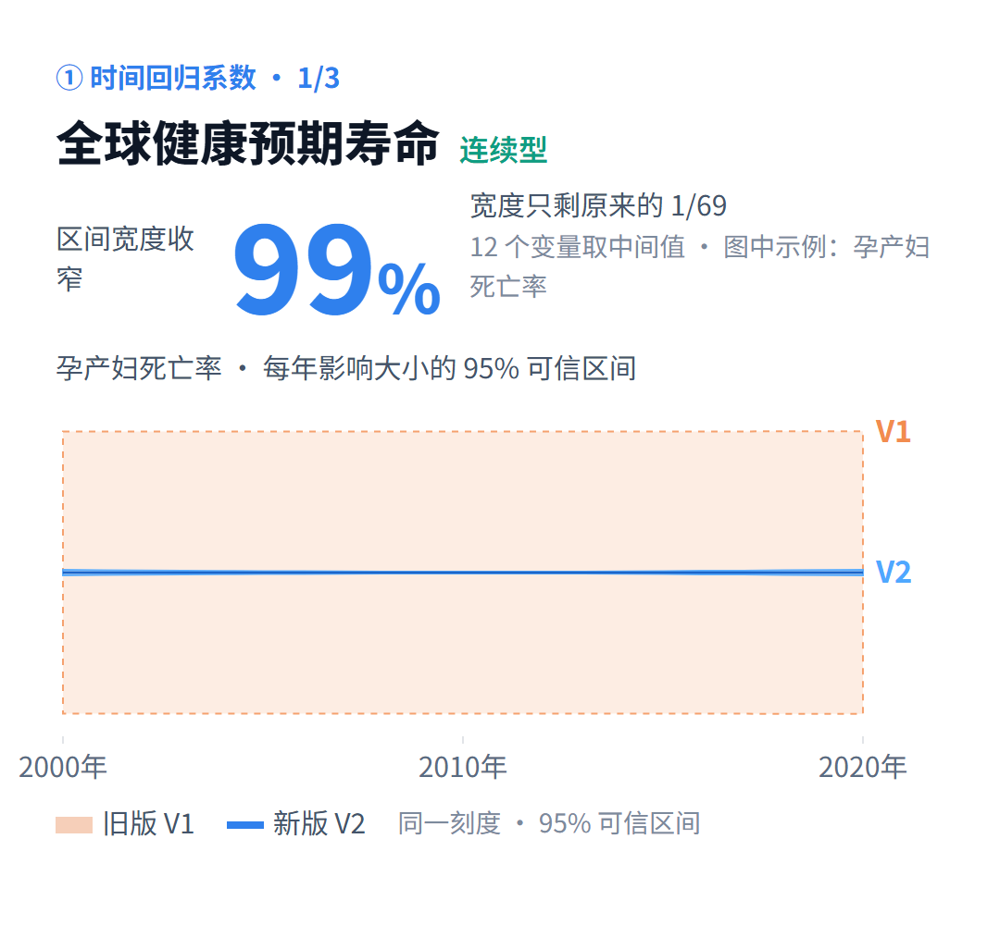
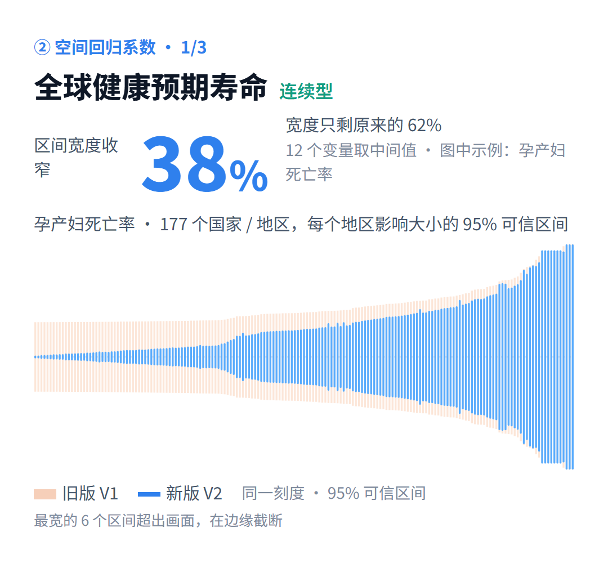
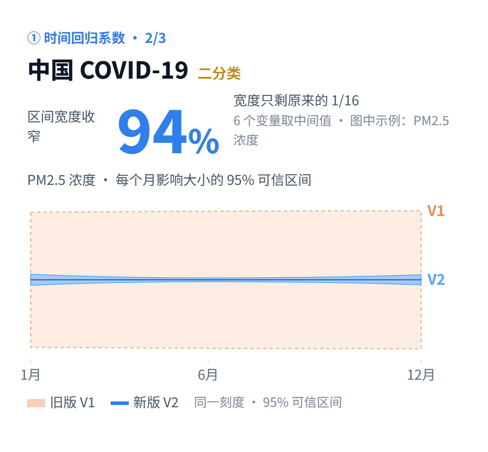
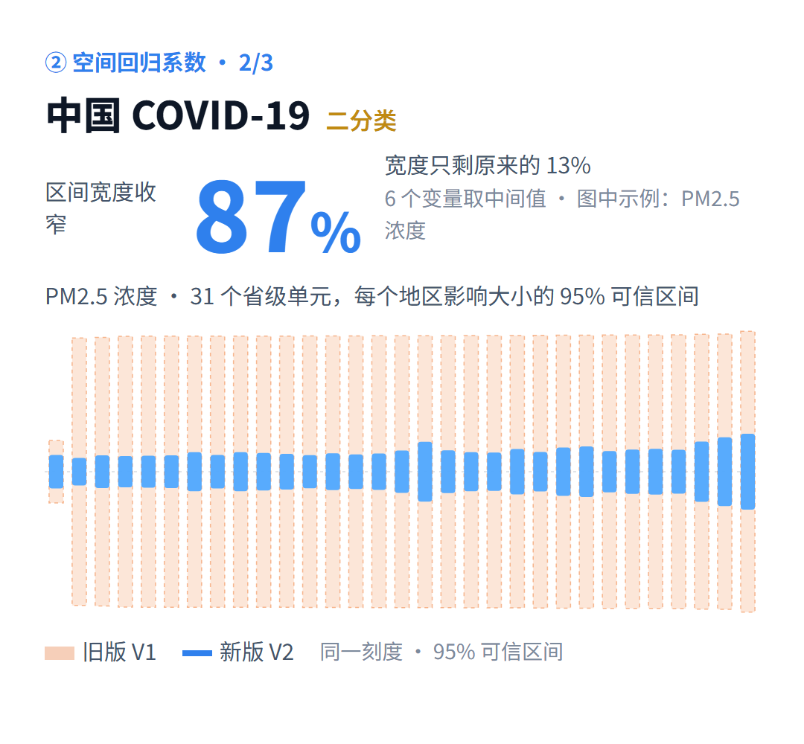
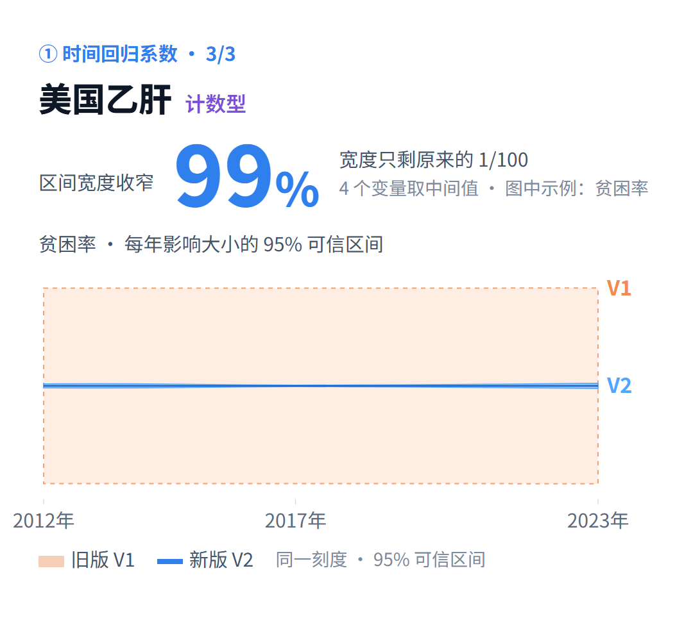
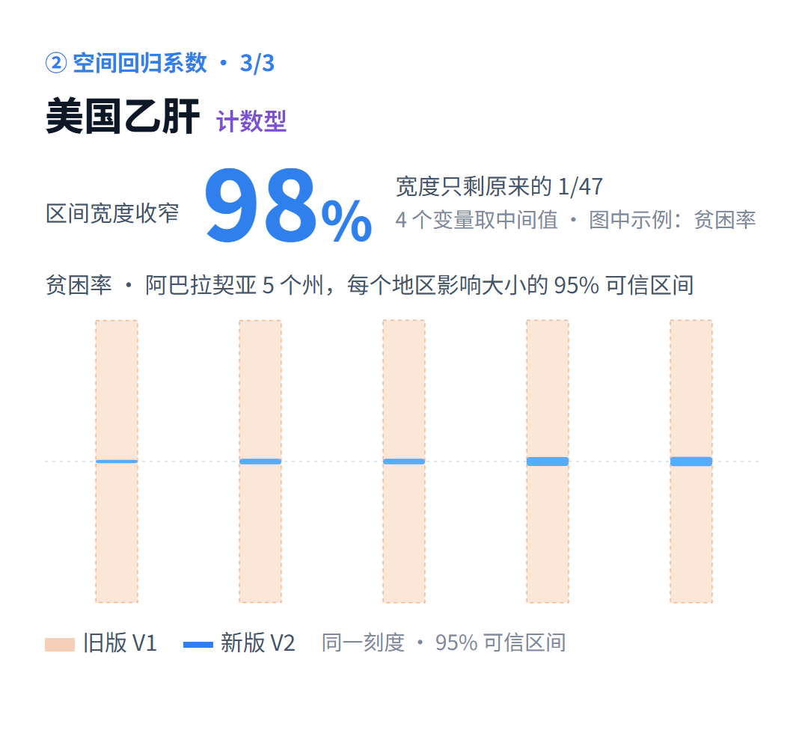

BSTVC 中文桌面版
中文安装器通过独立百度网盘入口提供。中文与英文安装器是不同语言版本的文件，请按自己的需要选择。
下载中文桌面版阅读中文用户指南 ↗
所附对比材料使用同一批案例数据和相同公开分析设置，分别比较时间与空间回归系数的 95% 贝叶斯可信区间宽度。观察具体案例中的变化，也保留不同地区的例外。
| 公开案例与范围 | 结果类型 | 时间区间宽度缩小 | 空间区间宽度缩小 |
|---|---|---|---|
| 全球健康预期寿命177 个国家／地区 · 2000–2020 年 12 个解释变量 | 连续型 | 约99% | 约38% |
| 中国 COVID-1931 个省级单元 · 2020 年 1–12 月 6 个解释变量 | 二分类 | 约94% | 约87% |
| 美国乙肝阿巴拉契亚 5 个州 · 2012–2023 年 4 个解释变量 | 计数型 | 约99% | 约98% |
材料报告：372 个时间区间全部变窄；2,330 个空间区间中 96.7% 变窄。健康预期寿命案例中，与邻国共享边界的 150 个国家区间全部变窄，无共享边界的地区两版基本持平。汇总比例不表示每个变量、每个地区都会按同一比例收窄。
保留本批材料原图：橙色为 V1，蓝色为 V2。每个案例分别展示时间与空间；点击图片可查看大图。






中文旁白与字幕，依次介绍回归系数、可信区间，以及时间、空间两个维度的案例结果。点按播放后才加载视频。
三案例对比同一批数据的时间与空间区间宽度。
通过图形界面开展贝叶斯时空分析。选择适合自己的语言版本，参考对应指南，从案例到自己的研究数据。
中文安装器通过独立百度网盘入口提供。中文与英文安装器是不同语言版本的文件，请按自己的需要选择。
下载中文桌面版Windows x64 英文安装器 · 版本 26.10.25
下载英文安装器免费下载，科研使用；具体使用条件以对应版本许可与说明为准。上述版本号、大小和 SHA-256 仅对应英文安装器，不适用于中文网盘文件。
先阅读本版数据要求与案例说明，再准备数据并重新运行 V2 分析。将模型假设、数据质量与诊断结果一同纳入解读。
打开中文用户指南 ↗